CA-01 平台能力分析与方案选择
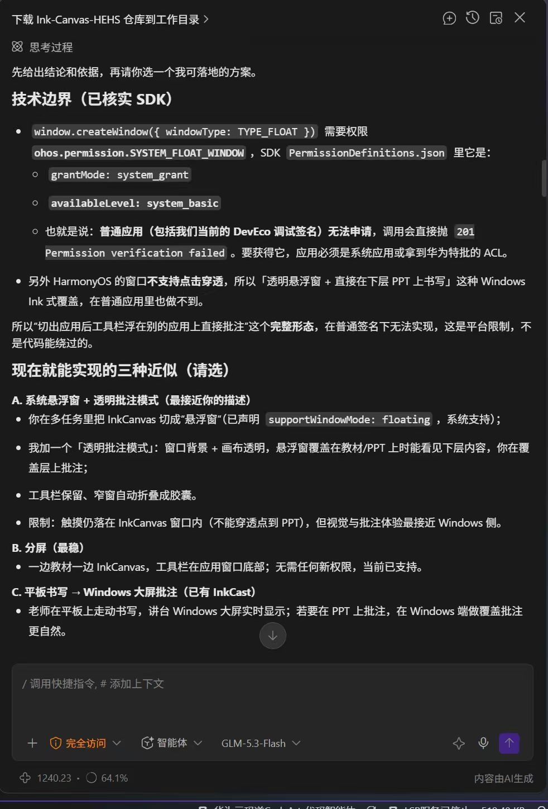
核心功能开发的 AI 交互、Prompt、代码生成与重构、排错和验证记录。依据用户提供的截图、日志与鸿蒙运行素材整理。
现含 13 张交互截图、6 份过程案例、2 份成员原文档和 3 段运行录屏。点击截图可查看完整分辨率。源文件哈希、原日志行号和材料处理说明见 README 与来源索引。

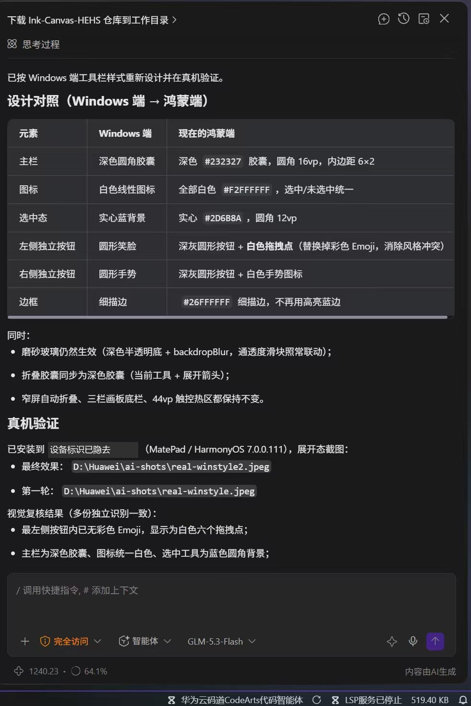
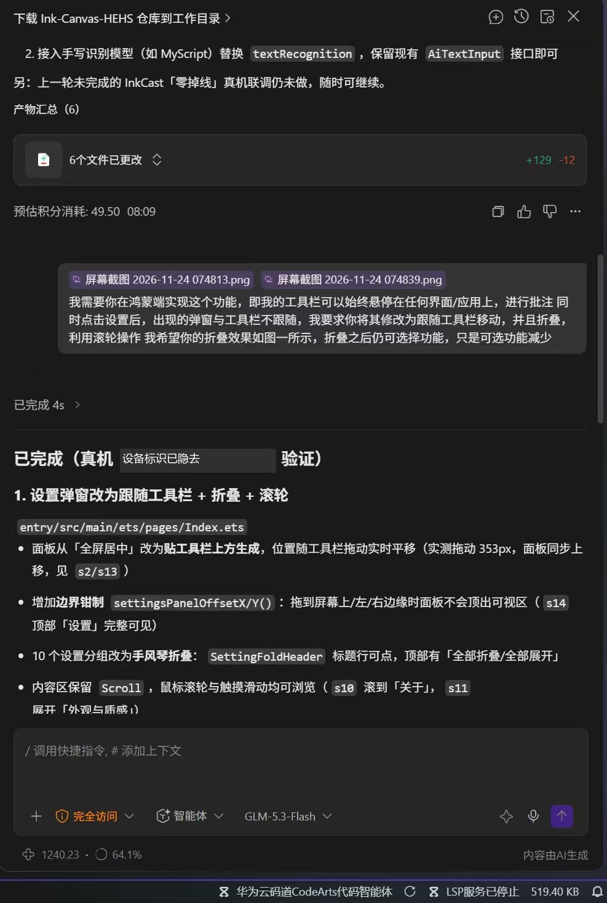
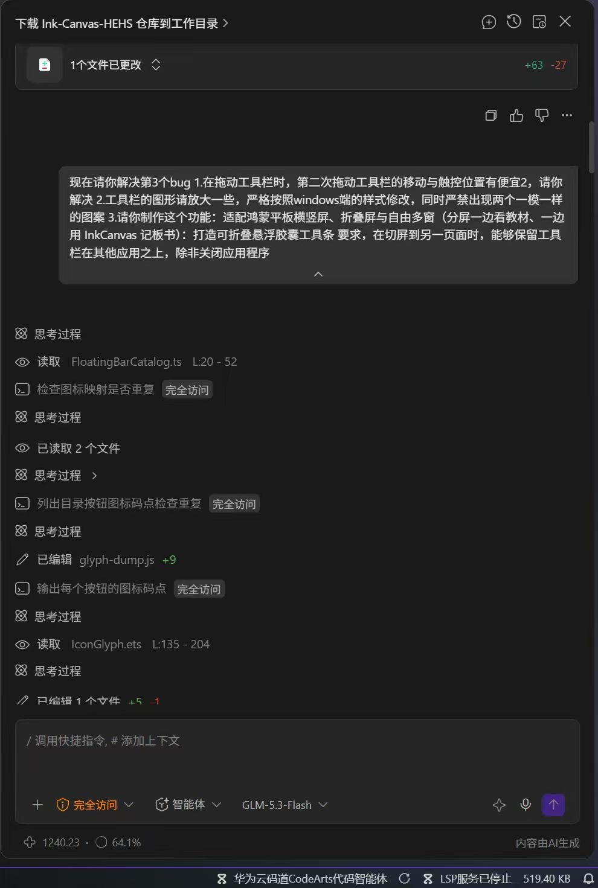
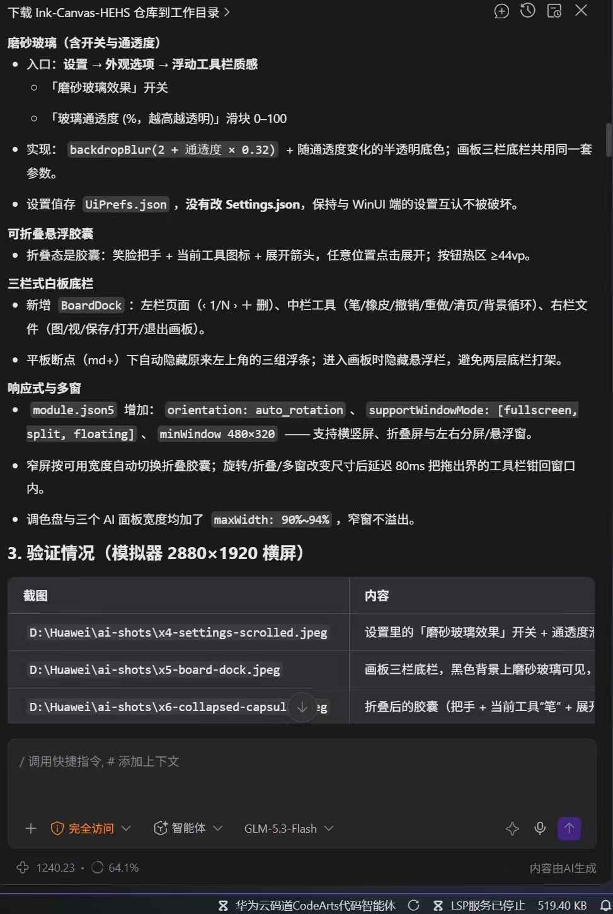
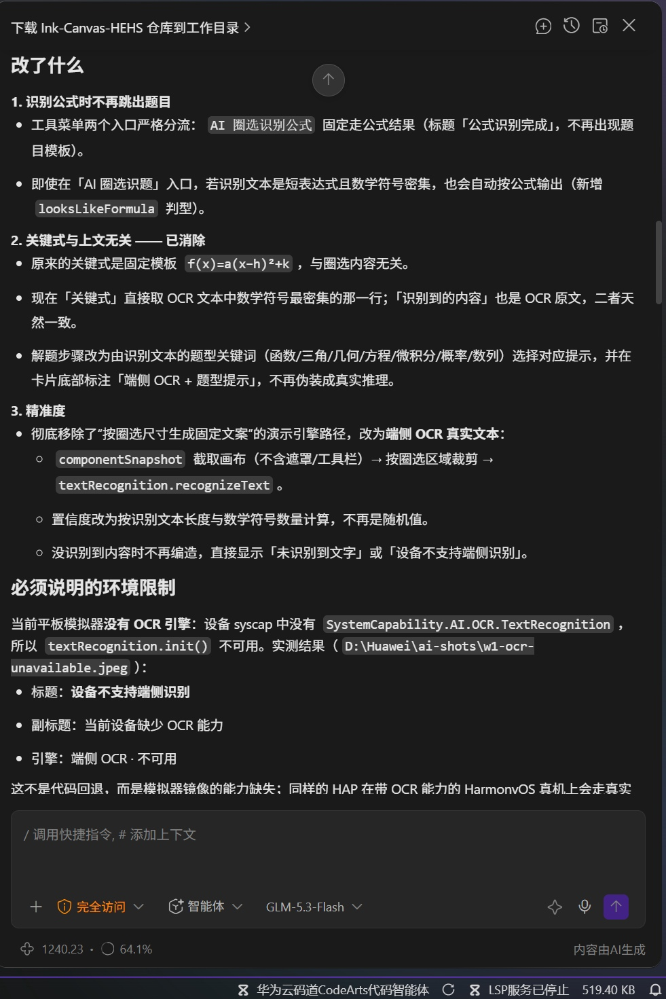
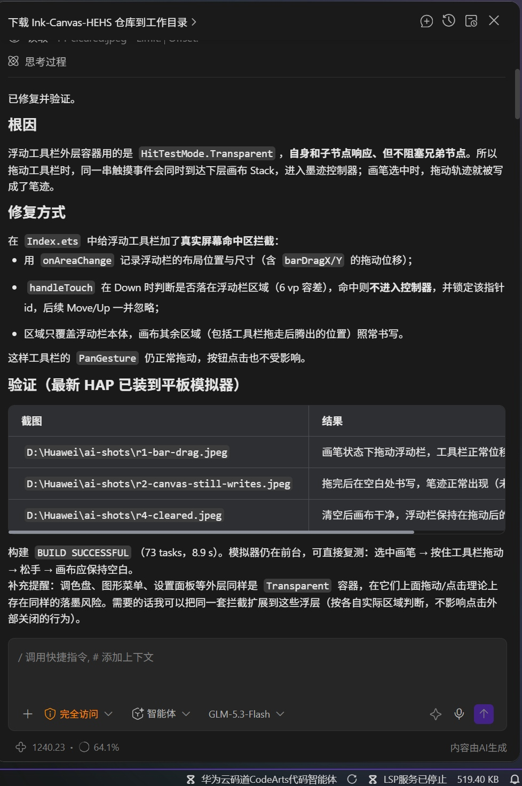
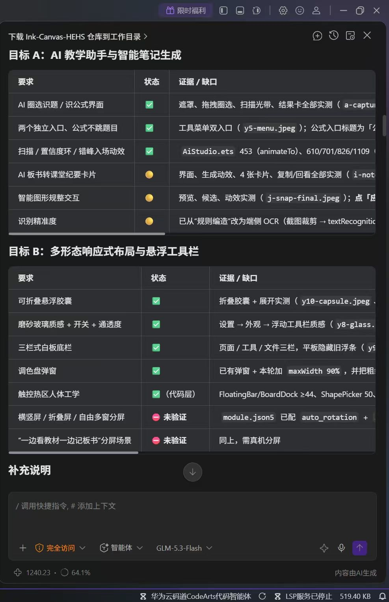
读取公式与结果卡实现，调整公式候选加权、题型排序和质量提示，修改 AiAssistant.ts、AiStudio.ets 与 Index.ets。
设备手写 OCR 返回空的情形仍存在。逻辑断言与结果卡显示的验证范围分别记录，不能据此声称任意手写公式都能准确识别。
我要求你优化你的AI公式识别以及智能搜题功能
日志中的用户输入，2026-11-24T07:47:04.237
2026-11-24T07:48:05.837 · kernel-codeartsdoer-incognito-2026-11-24T074301-44376-0.log · 第 6271 行
filePath
D:/Ink-Canvas-HEHS/harmony/core/src/main/ets/ai/AiAssistant.ts
oldString
export interface AiRecognizeResult {
Kind: number;
Title: string;
Badge: string;
Question: string;
Formula: string;
Steps: string[];
Tags: string[];
Confidence: number;
Engine: string;
}
newString
export interface AiRecognizeResult {
Kind: number;
Title: string;
Badge: string;
Question: string;
Formula: string;
// 以下为「公式识别 / 搜题」增强字段：
// FormulaLatex —— 由公式行按确定性规则转写的 LaTeX，可直接复制到公式编辑器；
// Candidates —— 同一次识别中得分靠前的其它候选公式行（多行板书时避免只取一行）；
// Givens / Goal —— 从题干中抽取的已知条件与所求目标；
// Pitfalls —— 按题型给出的易错提醒；Warnings —— 识别质量提示（不阻断展示）。
FormulaLatex: string;
Candidates: string[];
Givens: string[];
Goal: string;
Pitfalls: string[];
Warnings: string[];
Steps: string[];
Tags: string[];
Confidence: number;
Engine: string;
}
output
Edit applied successfully. (no need to Read it back to verify - Edit would have errored if the change failed.)2026-11-24T07:49:11.944 · kernel-codeartsdoer-incognito-2026-11-24T074301-44376-0.log · 第 9399 行
filePath
D:/Ink-Canvas-HEHS/harmony/core/src/main/ets/ai/AiAssistant.ts
oldString
return ['圈出已知条件与所求量', '把条件转成代数式或图形关系', '选择公式求解并回代验证'];
}
function ocrConfidence(text: string, kind: number): number {
newString
return ['圈出已知条件与所求量', '把条件转成代数式或图形关系', '选择公式求解并回代验证'];
}
// ---- 搜题增强：已知 / 所求 / 易错 ----------------------------------------
interface TopicPitfalls {
tag: string;
items: string[];
}
const TOPIC_PITFALLS: TopicPitfalls[] = [
{ tag: '函数与图像', items: ['闭区间上的最值要同时比较顶点与两个端点', '求解析式后先确认定义域，再讨论单调性'] },
{ tag: '三角函数', items: ['诱导公式先定符号，再化简函数名', '开方或约分时注意角的取值范围'] },
{ tag: '平面几何', items: ['辅助线要落在已知条件能推出的位置', '用相似 / 全等前先写清对应关系'] },
{ tag: '方程与根', items: ['移项后方程两边要同号整理，勿漏负号', '判别式 Δ 的符号决定根的数量与范围'] },
{ tag: '微积分', items: ['积分上下限与变量要一一对应', '求导后回代原式检查量纲与符号'] },
{ tag: '概率统计', items: ['样本空间要写全，事件之间勿重复计数', '期望 / 方差公式中的概率需满足归一化'] },
{ tag: '数列', items: ['等差 / 等比判定要用相邻项差值或比值', '求和时注意项数与首项是否对应'] }
];
function pitfallsForTopics(topics: string[]): string[] {
const out: string[] = [];
for (let i = 0; i < topics.length; i++) {
for (let j = 0; j < TOPIC_PITFALLS.length; j++) {
if (TOPIC_PITFALLS[j].tag === topics[i]) {
for (let k = 0; k < TOPIC_PITFALLS[j].items.length; k++) {
out.push(TOPIC_PITFALLS[j].items[k]);
}
}
}
}
if (out.length === 0) {
out.push('回到原题核对单位、符号与取值范围');
}
return out;
}
const GIVEN_RULES: RegExp[] = [
/已知[：:]?\s*([^，,。；;\n]{2,48})/,
/设\s*([^，,。；;\n]{1,36})/,
/[0-9]+(?:\.[0-9]+)?\s*(?:cm|mm|kg|°|度|米|厘米)/
];
function extractGivens(text: string): string[] {
const out: string[] = [];
for (let i = 0; i < GIVEN_RULES.length; i++) {
const m = GIVEN_RULES[i].exec(text);
if (m === null || m.length < 2) {
continue;
}
const value = m[1].trim();
if (value.length === 0) {
continue;
}
let dup = false;
for (let j = 0; j < out.length; j++) {
if (out[j] === value) {
dup = true;
break;
}
}
if (!dup) {
out.push(value);
}
if (out.length >= 3) {
break;
}
}
return out;
}
const GOAL_RULES: RegExp[] = [
/求\s*([^，,。；;？?\n]{1,40})/,
/证明\s*([^。；;\n]{1,40})/,
/化简\s*([^，,。；;\n]{1,40})/,
/计算\s*([^。；;\n]{1,40})/,
/判断\s*([^，,。；;？?\n]{1,40})/
];
function extractGoal(text: string): string {
for (let i = 0; i < GOAL_RULES.length; i++) {
const m = GOAL_RULES[i].exec(text);
if (m
output
Edit applied successfully. (no need to Read it back to verify - Edit would have errored if the change failed.)2026-11-24T07:49:59.553 · kernel-codeartsdoer-incognito-2026-11-24T074301-44376-0.log · 第 17719 行
filePath
D:/Ink-Canvas-HEHS/harmony/controls/src/main/ets/AiStudio.ets
oldString
@Prop result: AiRecognizeResult = {
Kind: 0,
Title: '识别完成',
Badge: '',
Question: '',
Formula: '',
Steps: [],
Tags: [],
Confidence: 0.9,
Engine: ''
};
newString
@Prop result: AiRecognizeResult = {
Kind: 0,
Title: '识别完成',
Badge: '',
Question: '',
Formula: '',
FormulaLatex: '',
Candidates: [],
Givens: [],
Goal: '',
Pitfalls: [],
Warnings: [],
Steps: [],
Tags: [],
Confidence: 0.9,
Engine: ''
};
output
Edit applied successfully. (no need to Read it back to verify - Edit would have errored if the change failed.)2026-11-24T09:47:42.842 · kernel-codeartsdoer-incognito-2026-11-24T094627-24264-0.log · 第 4862 行
output PASS 搜题****SS 搜题****SS 自动****SS 无O****SS 手写****SS 质量****25 passed, 0 failed
以同一拖动位移驱动面板，增加 settingsPanelOffsetX/Y 边界钳制，使用 CompactCard 呈现折叠后的常用工具，设置分组改为手风琴。
跨应用悬浮涉及系统权限。记录提供系统多任务悬浮窗路径，普通应用自动置顶与穿透能力仍受平台限制。
我需要你在鸿蒙端实现这个功能，即我的工具栏可以始终悬停在任何界面/应用上，进行批注 同时点击设置后，出现的弹窗与工具栏不跟随，我要求你将其修改为跟随工具栏移动，并且折叠，利用滚轮操作 我希望你的折叠效果如图一所示，折叠之后仍可选择功能，只是可选功能减少
CA-03 用户输入区逐字转录，截图中的附件标题省略
2026-11-24T08:15:03.956 · kernel-codeartsdoer-incognito-2026-11-24T081059-44376-2.log · 第 11489 行
filePath
D:/Ink-Canvas-HEHS/harmony/controls/src/main/ets/FloatingBar.ets
oldString
if (!this.compactMode()) {
this.PrimaryCard()
this.GestureCard()
} else {
this.CollapsedCapsule()
}
newString
if (!this.compactMode()) {
this.PrimaryCard()
this.GestureCard()
} else {
this.CompactCard()
}
output
Edit applied successfully. (no need to Read it back to verify - Edit would have errored if the change failed.)2026-11-24T08:15:10.669 · kernel-codeartsdoer-incognito-2026-11-24T081059-44376-2.log · 第 12297 行
filePath
D:/Ink-Canvas-HEHS/harmony/controls/src/main/ets/FloatingBar.ets
oldString
// 折叠胶囊：当前工具 + 展开箭头；用 Button 承载点击（真机触摸下 onClick/gesture 易被父级手势拦截）。
@Builder
CollapsedCapsule() {
newString
// 折叠态白名单（对齐 Windows 端折叠浮条）：只保留最常用的 6 项，仍可直接切换工具，
// 不是只显示当前工具的单按钮胶囊；其余功能收进「展开」后按需调用。
private compactVisible(id: string): boolean {
return id === 'mouse' || id === 'pen' || id === 'highlighter'
|| id === 'clear' || id === 'board' || id === 'tools';
}
@Builder
CompactCard() {
Row({ space: 0 }) {
ForEach(FLOATING_BAR_BUTTONS, (button: FloatingBarButton) => {
if (this.compactVisible(button.Id) && this.buttonVisible(button)) {
this.ButtonCell(button)
}
}, (button: FloatingBarButton) => 'compact-' + button.Id)
Column() {
Text('⌃')
.fontSize(15 * this.uiScale)
.fontColor(this.winIcon())
}
.width(Math.max(44, 40 * this.uiScale))
.height(Math.max(44, this.tokens().buttonHeight * this.uiScale))
.justifyContent(FlexAlign.Center)
.borderRadius(10)
.backgroundColor(this.buttonBase())
.onClick(() => {
// 窗口过窄时会因 availableWidth 自动折叠，这里同时置 forceExpanded，
// 保证「展开」在窄屏也一定回到完整主栏。
this.forceExpanded = true;
this.onAction('toggleCollapse');
})
}
.padding({ left: 6, right: 4, top: 2, bottom: 2 })
.linearGradient(this.barGradient(this.winSurface()))
.borderRadius(16)
.transition(barCollapseTransition(this.reduceMotion))
}
// 折叠胶囊：当前工具 + 展开箭头；用 Button 承载点击（真机触摸下 onClick/gesture 易被父级手势拦截）。
@Builder
CollapsedCapsule() {
output
Edit applied successfully. (no need to Read it back to verify - Edit would have errored if the change failed.)2026-11-24T08:24:12.685 · kernel-codeartsdoer-incognito-2026-11-24T082057-44376-4.log · 第 14063 行
filePath
D:/Ink-Canvas-HEHS/harmony/entry/src/main/ets/pages/Index.ets
oldString
.clip(true)
.margin({ bottom: this.settings.appearance.floatingBarBottomMargin + 92 })
.offset({ x: this.barDragX, y: this.barDragY })
newString
.clip(true)
.margin({ bottom: this.settings.appearance.floatingBarBottomMargin + 92 })
.offset({ x: this.settingsPanelOffsetX(), y: this.settingsPanelOffsetY() })
output
Edit applied successfully. (no need to Read it back to verify - Edit would have errored if the change failed.)2026-11-24T08:24:21.309 · kernel-codeartsdoer-incognito-2026-11-24T082057-44376-4.log · 第 15062 行
filePath
D:/Ink-Canvas-HEHS/harmony/entry/src/main/ets/pages/Index.ets
oldString
@Builder
SettingFoldHeader(title: string, index: number) {
newString
// 设置面板跟随工具栏时做边界钳制：面板宽高按当前窗口与 maxWidth/maxHeight 估算，
// 避免拖到屏幕边缘时面板顶出可视区、按钮无法点击。
private settingsPanelOffsetX(): number {
const w = Math.max(0, this.windowWidth);
const panelW = Math.min(w * 0.94, this.fullLayout() ? 460 : 380);
const half = (w - panelW) / 2;
return Math.max(-half, Math.min(half, this.barDragX));
}
private settingsPanelOffsetY(): number {
const h = Math.max(0, this.windowHeight);
const panelH = h * 0.62;
const bottom = this.settings.appearance.floatingBarBottomMargin + 92;
const minY = Math.min(0, -(h - bottom - panelH));
return Math.max(minY, this.barDragY);
}
@Builder
SettingFoldHeader(title: string, index: number) {
output
Edit applied successfully. (no need to Read it back to verify - Edit would have errored if the change failed.)由独立面板演进为内嵌化学层，整理原子、键、芳香环与撤销状态。切换笔、荧光笔、橡皮和选择时，使化学层让出触摸输入。
录屏展示化学结构基础交互。完整 ChemDraw 功能兼容、结构持久化与全部导出能力未由这些材料证明。
现在有一个问题，我在使用这个功能时，你禁用了我的批注功能，请你将两者兼容，同时请你继续对齐chemdraw的功能，使之更加美观
日志用户输入，2026-11-24T10:59:47.425
2026-11-24T10:11:40.380 · kernel-codeartsdoer-incognito-2026-11-24T101019-24264-5.log · 第 2747 行
filePath
D:/Ink-Canvas-HEHS/harmony/controls/Index.ets
oldString
export { BoardDock } from './src/main/ets/BoardDock';
newString
export { BoardDock } from './src/main/ets/BoardDock';
export { ChemBoard } from './src/main/ets/ChemBoard';
export type { ChemAtom, ChemBond } from './src/main/ets/ChemBoard';
output
You must read file D:\Ink-Canvas-HEHS\harmony\controls\Index.ets before overwriting it. Use the Read tool first2026-11-24T10:57:57.966 · kernel-codeartsdoer-incognito-2026-11-24T105741-24264-15.log · 第 497 行
filePath
D:/Ink-Canvas-HEHS/harmony/controls/src/main/ets/ChemBoard.ets
oldString
export interface ChemBond {
Id: number;
A: number;
B: number;
Order: number;
Wedge: boolean;
}
newString
export interface ChemBond {
Id: number;
A: number;
B: number;
Order: number;
Wedge: boolean;
Hashed: boolean;
}
// 苯环等芳香环的内圈标记（随环一起创建/删除）
export interface ChemAromatic {
Id: number;
X: number;
Y: number;
R: number;
Atoms: number[];
}
output
Edit applied successfully. (no need to Read it back to verify - Edit would have errored if the change failed.)2026-11-24T11:01:26.174 · kernel-codeartsdoer-incognito-2026-11-24T105741-24264-15.log · 第 11654 行
filePath
D:/Ink-Canvas-HEHS/harmony/entry/src/main/ets/pages/Index.ets
oldString
private handleAction(id: string): void {
if (id === 'pen') {
newString
private handleAction(id: string): void {
// 化学模式与批注共存：切到墨迹类工具时化学层让出触摸，墨迹可正常书写。
if (this.chemOpen && (id === 'pen' || id === 'highlighter' || id === 'mouse'
|| id === 'eraserCircle' || id === 'eraserStroke' || id === 'select' || id === 'shapes')) {
this.chemInputActive = false;
}
if (id === 'pen') {
output
Edit applied successfully. (no need to Read it back to verify - Edit would have errored if the change failed.)2026-11-24T11:05:38.888 · kernel-codeartsdoer-incognito-2026-11-24T110353-24264-17.log · 第 8080 行
filePath
D:/Ink-Canvas-HEHS/harmony/controls/src/main/ets/ChemBoard.ets
oldString
interface ChemHistory {
a: ChemAtom[];
b: ChemBond[];
}
newString
interface ChemHistory {
a: ChemAtom[];
b: ChemBond[];
r?: ChemAromatic[];
}
output
Edit applied successfully. (no need to Read it back to verify - Edit would have errored if the change failed.)读取 FloatingBarCatalog.ts 与 IconGlyph.ets，生成 glyph-dump.js 输出图标码点，检查图标重复，继续编译和视觉微调。
该记录证明编译迭代与成功构建，不将编译成功等同于全部 UI 或硬件行为验收。部分原始日志自身含有 ****，摘录保持原状。
现在请你解决第3个bug 1.在拖动工具栏时，第二次拖动工具栏的移动与触控位置有便宜2，请你解决2.工具栏的图形请放大一些，严格按照windows端的样式修改，同时严禁出现两个一模一样的图案3.请你制作这个功能：适配鸿蒙平板横竖屏、折叠屏与自由多窗（分屏一边看教材、一边用 InkCanvas 记板书）：打造可折叠悬浮胶囊工具条 要求，在切屏到另一个页面时，能够保留工具栏在其他应用之上，除非关闭应用程序
CA-04 用户输入区转录，保留原输入用词与编号
2026-11-23T17:12:26.162 · kernel-codeartsdoer-incognito-2026-11-23T164730-16136-0.log · 第 60367 行
output
COMPILE RESULT:FAIL {ERROR:2 WARN:98}
at runArkPack (D:\Huawei\DevEcoCLI\command-line-tools\hvigor\hvigor-ohos-plugin\node_modules\@ohos\hvigor-arkts-com
pose\dist\src\arkts-pack.js:1:6139)
ArkTSCompilerError: ArkTS Compiler Error
at throwArkTsCompilerError (D:\Huawei\DevEcoCLI\command-line-tools\hvigor\hvigor-ohos-plugin\node_modules\@ohos\hvi
gor-arkts-compose\dist\src\data\compose-error.js:1:423)
at throwErrorIfHasErrorInfo (D:\Huawei\DevEcoCLI\command-line-tools\hvigor\hvigor-ohos-plugin\node_modules\@ohos\hv
igor-arkts-compose\dist\src\plugins\common-plugin.js:1:5405)
at Object.handler (D:\Huawei\DevEcoCLI\command-line-tools\hvigor\hvigor-ohos-plugin\node_modules\@ohos\hvigor-arkts
-compose\dist\src\plugins\common-plugin.js:1:3420)
at D:\Huawei\DevEcoCLI\command-line-tools\hvigor\hvigor-ohos-plugin\node_modules\@ohos\hvigor-arkts-base\node_modul
es\rollup-lite\dist\shared\rollup.js:12360:40
> hvigor ERROR: BUILD FAILED in 8 s 471 ms
2026-11-23T17:12:26.200 · kernel-codeartsdoer-incognito-2026-11-23T164730-16136-0.log · 第 60401 行
filePath
D:\Huawei\glyph-dump.js
content
const fs = require('fs');
const p = 'D:/Ink-Canvas-HEHS/harmony/controls/src/main/ets/FloatingBarCatalog.ts';
const s = fs.readFileSync(p, 'utf8');
const re = /Id: '([A-Za-z0-9]+)'[^\n]*?Glyph: '([^']*)'/g;
let m;
while ((m = re.exec(s))) {
const codes = [...m[2]].map(c => 'U+' + c.codePointAt(0).toString(16).toUpperCase());
console.log(m[1] + '\t' + codes.join(' '));
}
output
Wrote file successfully.2026-11-23T17:12:26.215 · kernel-codeartsdoer-incognito-2026-11-23T164730-16136-0.log · 第 60425 行
output > hvigor Finished :entry:default@SignHap... after 1 s 737 ms > hvigor Finished :entry:default@CollectDebugSymbol... after 1 ms > hvigor Finished :entry:assembleHap... after 1 ms > hvigor BUILD SUCCESSFUL in 9 s 22 ms 73 tasks in total: 32 executed, 41 up-to-date
CA-07 指出透明命中容器使同一触摸落到下层画布。修复按实际工具栏屏幕区域拦截 Down，并保持同一指针 Move／Up 的一致处理。另一日志定位 Scroll 与无显式宽度 Column 的循环依赖。
本材料使用截图中的排错报告与日志字段，未在本机重放这些鸿蒙触摸测试。多设备和不同缩放的手势仍需扩展验证。
截图记录了对浮动工具栏拖动与画布输入冲突的排查，原始提问未在该截图中完整呈现。
CA-07 的根因、修复方式与验证表；相关工具面板排查见日志
2026-11-24T08:24:21.309 · kernel-codeartsdoer-incognito-2026-11-24T082057-44376-4.log · 第 15062 行
filePath
D:/Ink-Canvas-HEHS/harmony/entry/src/main/ets/pages/Index.ets
oldString
@Builder
SettingFoldHeader(title: string, index: number) {
newString
// 设置面板跟随工具栏时做边界钳制：面板宽高按当前窗口与 maxWidth/maxHeight 估算，
// 避免拖到屏幕边缘时面板顶出可视区、按钮无法点击。
private settingsPanelOffsetX(): number {
const w = Math.max(0, this.windowWidth);
const panelW = Math.min(w * 0.94, this.fullLayout() ? 460 : 380);
const half = (w - panelW) / 2;
return Math.max(-half, Math.min(half, this.barDragX));
}
private settingsPanelOffsetY(): number {
const h = Math.max(0, this.windowHeight);
const panelH = h * 0.62;
const bottom = this.settings.appearance.floatingBarBottomMargin + 92;
const minY = Math.min(0, -(h - bottom - panelH));
return Math.max(minY, this.barDragY);
}
@Builder
SettingFoldHeader(title: string, index: number) {
output
Edit applied successfully. (no need to Read it back to verify - Edit would have errored if the change failed.)移除按选区大小产生固定结果的演示路径，改为画布快照裁剪与 textRecognition；对识别文本的公式行和题型进行处理，空结果反馈引擎状态或墨迹统计。
端侧印刷体 OCR、手写公式识别与远程模型推理是不同环节。材料未证明真机手写公式识别的完整成功链路。
我要求你优化你的AI公式识别以及智能搜题功能
日志中的用户输入，2026-11-24T07:47:04.237
2026-11-24T09:47:42.842 · kernel-codeartsdoer-incognito-2026-11-24T094627-24264-0.log · 第 4862 行
output PASS 搜题****SS 搜题****SS 自动****SS 无O****SS 手写****SS 质量****25 passed, 0 failed
21 秒 · 用户提供的鸿蒙操作录屏
84 秒 · 用户提供的鸿蒙操作录屏
58 秒 · 用户提供的鸿蒙操作录屏
设备标识已遮盖，原包保留在用户提供目录。录屏和对话记录说明所示操作已运行，本次未重新连接设备测量性能。OCR、分屏、跨应用权限等限制详见案例。阅读完整索引 ↗
新增 5 张交互截图及 2 份作者原文档。截图中的可见代码、回复与目录用于说明开发过程，测试及效率数字保留为作者自述。阅读整理说明 ↗
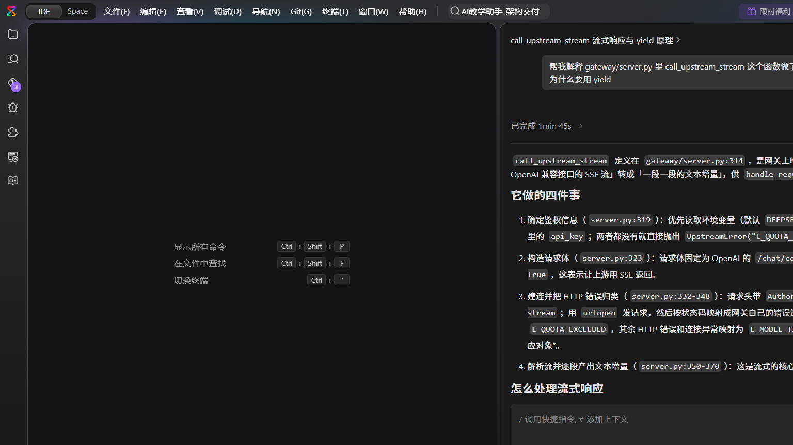
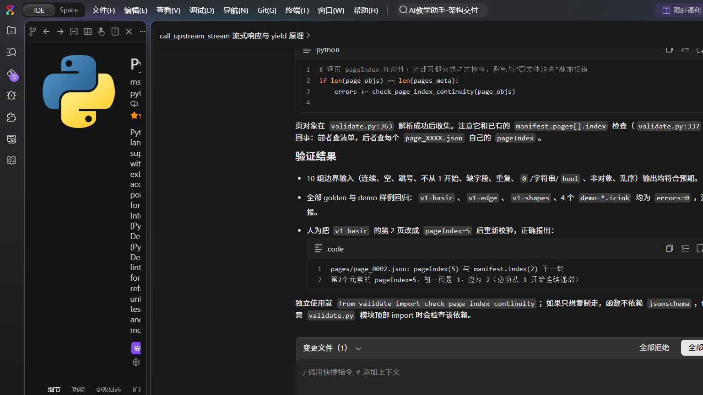
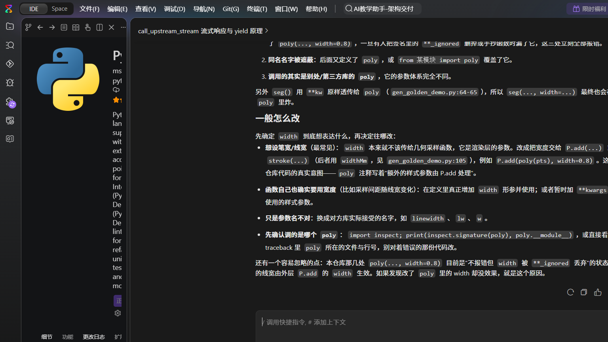
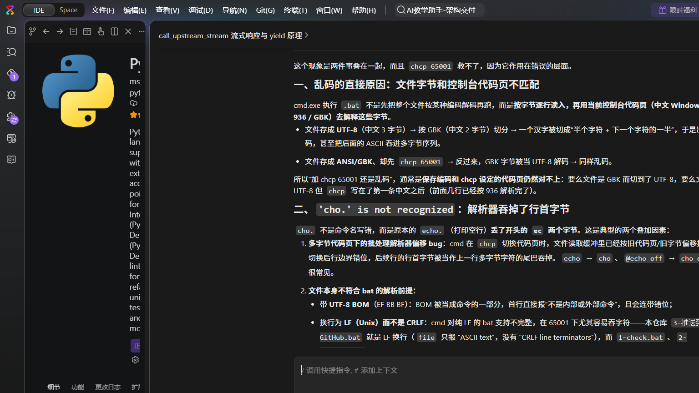
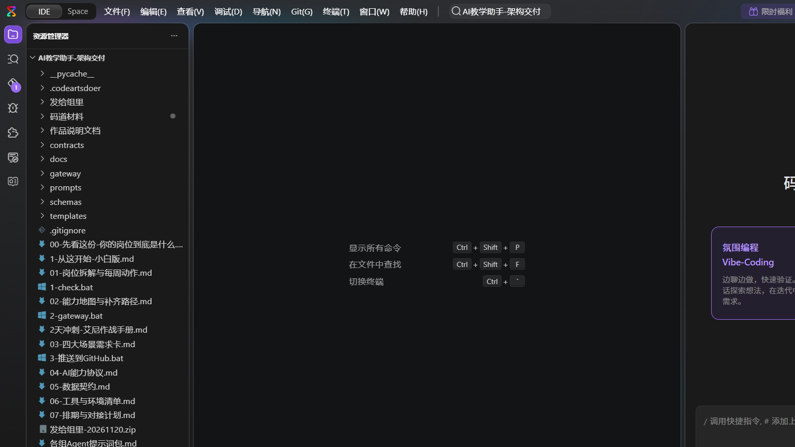